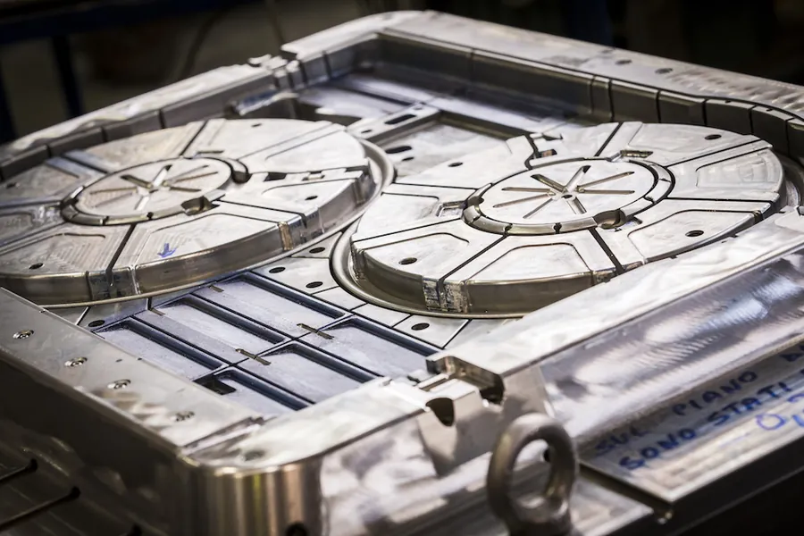
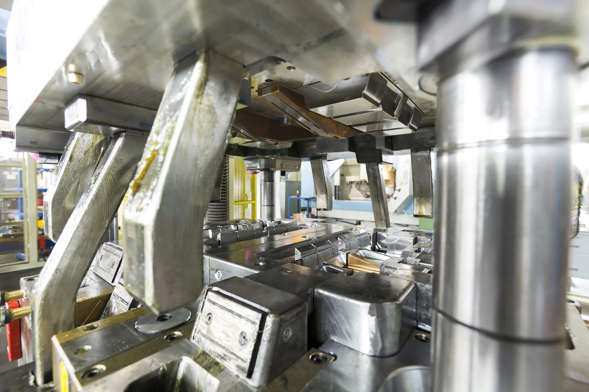
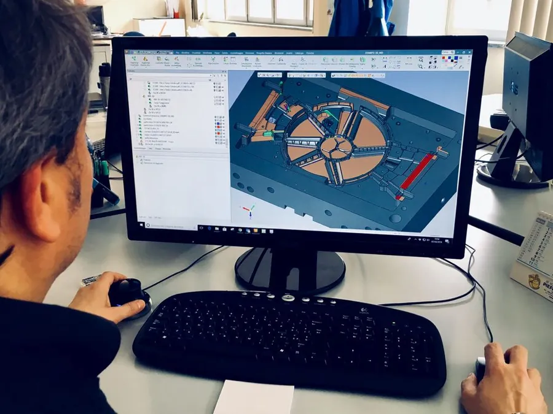
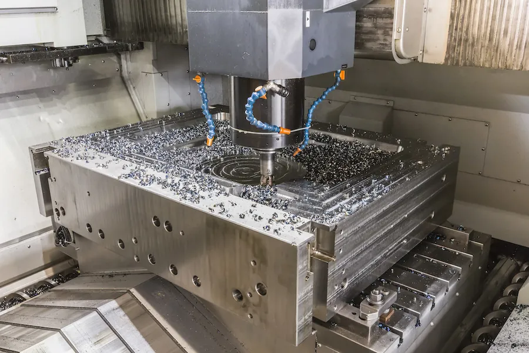
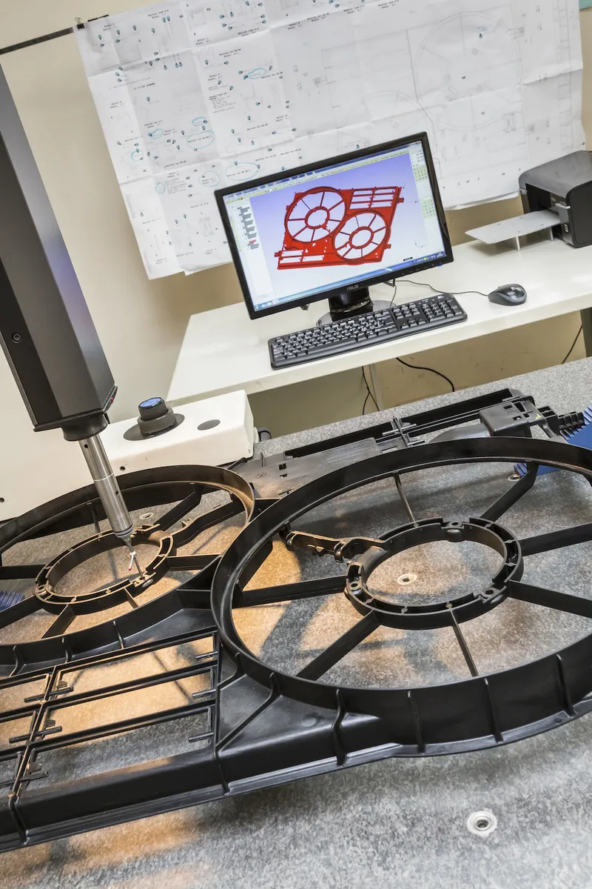
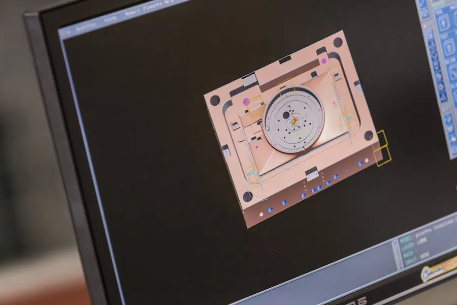
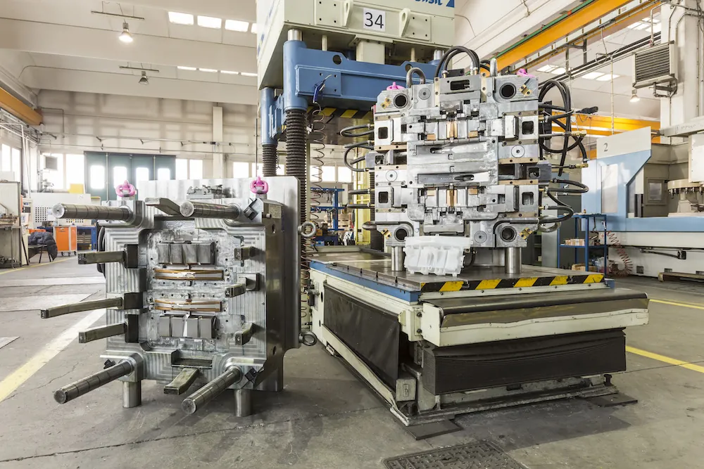

Ufficio commerciale
Vi affianca nel definire le specifiche del pezzo e dello stampo: materiale, volumi, pressa, tempi. Parlate con una persona sola dall'offerta alla consegna.

Dal disegno del pezzo allo stampo collaudato, tutto in casa: progettazione, officina, metrologia. Per automotive, elettrodomestici, telefonia e meccanica.
Per materie plastiche, dal particolare tecnico al componente di grandi dimensioni.
Per alluminio e zama, progettati per la vostra pressa e i vostri volumi.
Cinque reparti, un solo interlocutore. Toccate una tappa per vedere cosa succede.

Vi affianca nel definire le specifiche del pezzo e dello stampo: materiale, volumi, pressa, tempi. Parlate con una persona sola dall'offerta alla consegna.

Non ci limitiamo a disegnare l'attrezzatura: con il calcolo numerico prevediamo come si comporterà e vi suggeriamo come ottenere il miglior risultato per prestazioni e prezzo. I programmi passano in rete direttamente alle macchine.

Tutte le parti dello stampo si costruiscono qui, anche nel tempo non presidiato. Assemblaggio e montaggio sono affidati a tecnici con esperienza più che ventennale.

Misura e collauda i processi e il pezzo finale, prima che lo stampo lasci l'officina.

Sovrintende tutti i processi, dall'acquisizione dell'ordine alla consegna. Sistema qualità certificato ISO 9001 dalla fine degli anni '90.

Tecno Bajardi s.r.l.
Via Carlo Pittara 30, 10151 Torino
Tel. 011 455 3662
Fax 011 455 7193
tecnobajardi@bajardi.it